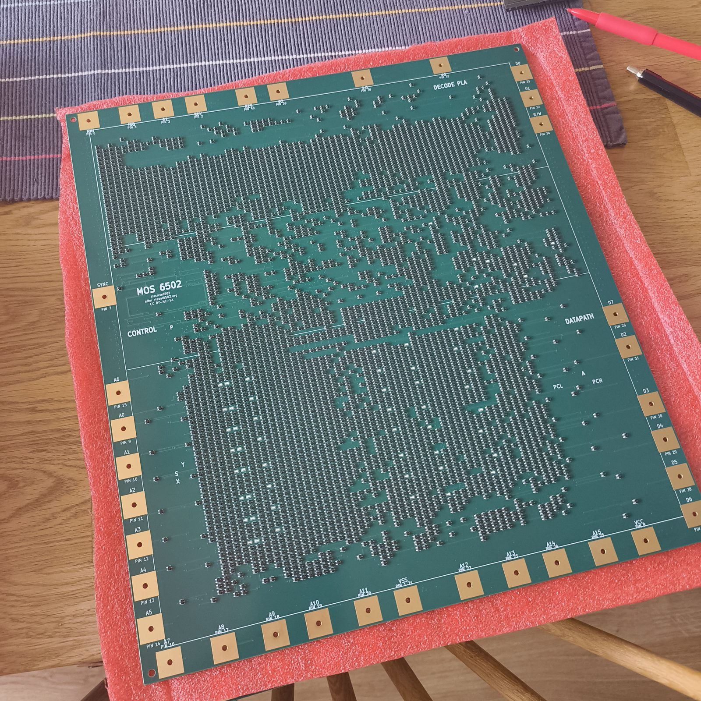
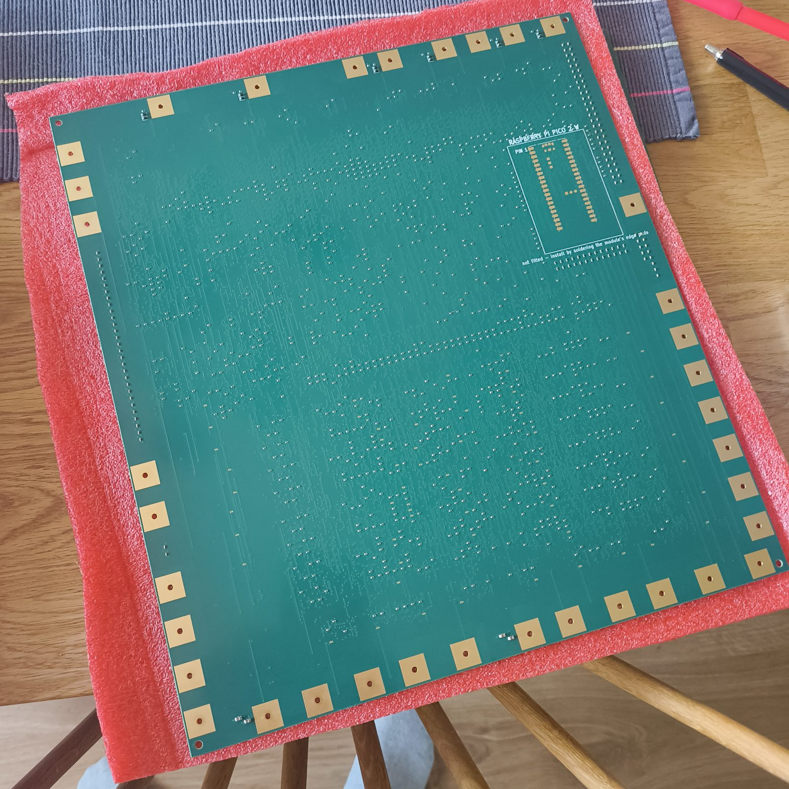
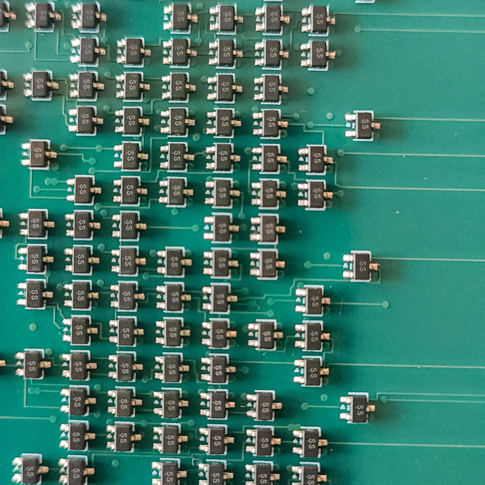
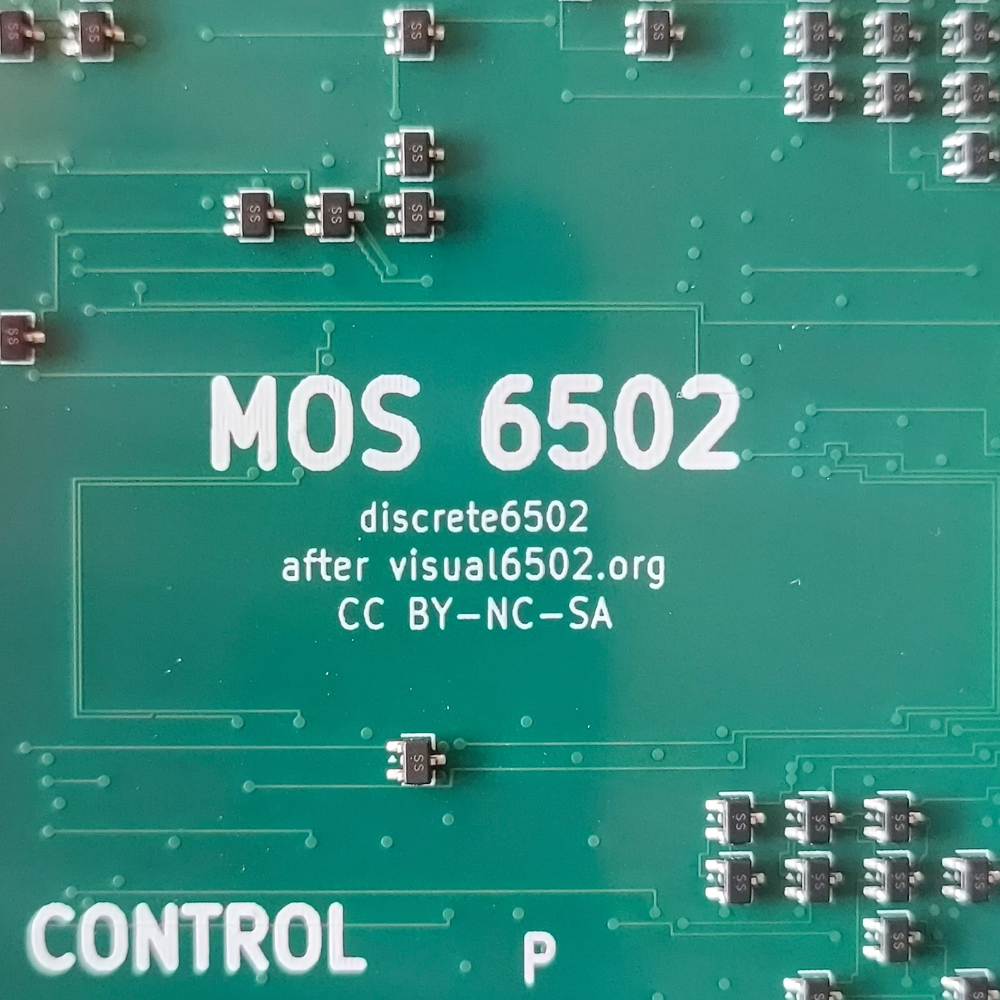

discrete6502 — the measurement log for the real boards. This page records what was measured and what it meant. The procedure — what to do, in what order, and why — lives in bringing the board to life. Where the two disagree, this page is the record of events and that page is the instruction; both get corrected.
| Step | Date | Board | Result |
|---|---|---|---|
| 0 — Receiving inspection | 2026-08-12 | all | PASS |
| 1 — VCC↔VSS resistance, unpowered | 2026-08-12 | #1 (all four, forward) | PASS |
| 2 — 5 V, unclocked, no Pico | 2026-08-23 | #1 | PASS — but 1.4 A, 4× budget |
| 2b — Charge retention (by video) | 2026-08-23 | #1 | PASS — 1.9–2.3 nA/FET |
| 3 — External clock, watch the LEDs | 2026-08-24 | #1 | PASS — clock regenerates on-board |
| 3b — Thermal map (FLIR One) | 2026-08-24 | #1 | no hot spots — model corrected |
| 3c — Does it compute? (PC ripple) | 2026-08-25 | #1 | PASS — the CPU executes |
| 4 — Eight-site 10 kΩ rework | 2026-08-23 | #1 | done (out of order) |
| 5 — Solder the Pico | 2026-08-25 | #1 | PASS |
| 6 — First clocked run off the Pico | 2026-08-25 | #1 | PASS — A counts; 2.3 A, contention found |
| 6b — NOP-workload thermal difference test | — | — | not yet run |
| 7 — Clock window | — | — | not yet run |
| 8 — Functional test | — | — | not yet run |
Boards arrived: 4 assembled, 1 bare, as ordered. Depaneled by JLC, so the 5 mm process rails are already gone. Visual condition good on all four.


What the close-up inspection actually confirms, beyond “it looks nice”:
project-plan.md. That check was made on
a DFM render before production; this is the same check on delivered hardware, and it closes
the risk that would have taken out all four boards at once.MOS 6502 / discrete6502 / after visual6502.org / CC BY-NC-SA
block all print cleanly, which retires the concern behind the rev A silk re-placement (text
crossing pad copper was being printed half-eaten).

Besides the Pico site there are 56 unpopulated 0402 capacitor footprints,
C101–C156, and they are correct. They are the DNP ballast capacitors added
as layout insurance in M4 (2026-07-18), one per bit on each of the six buses:
| Bus | Bits | What it is |
|---|---|---|
sb0–7 | 8 | special bus — internal |
idb0–7 | 8 | internal data bus |
adl0–7 | 8 | address low |
adh0–7 | 8 | address high |
db0–7 | 8 | data bus |
ab0–15 | 16 | address bus |
They were never in the BOM or the CPL, so the assembler was never asked to place them. The census reconciles exactly, which is the real answer to “did they miss something?”:
5,421 netlist components
- 57 DNP (56 ballast caps + the Pico site)
- 36 THT bond pads (not placed parts)
---------
5,328 placements = CPL row count, exactlyThe CPL splits 4,106 top / 1,222 bottom, and the 100 capacitors it does place on the bottom are the 96 decouplers plus 4 bulk — so every part that was supposed to be fitted, was.
sb0–7 are
the worst dynamic nodes on the board — no pull-up at all, 13 FET pins hanging off each, and
the 32 pF that sets the retention floor (see tools/dynamic_nodes.py and the clock-floor
entry in project-plan.md). If the measured retention floor comes out too close to the
clock ceiling, these footprints are the built-in remedy — hand-fitting 100 pF on the
sb bits multiplies that node's stored charge several-fold. It is a trade, not a free
win: more capacitance buys retention at the cost of slewing the node more slowly, so it lowers the
ceiling while lowering the floor. Decide it with the Step 7 numbers in hand, not before.
Instrument: Biltema 2000018521 handheld DMM, manual range. Probes on a VCC bond pad and a VSS bond pad. “Forward” below means red probe on VSS — the direction the FET body diodes conduct. “Reverse” means red on VCC, which is also the board's normal operating polarity.
| Range | Forward (red on VSS) | Reverse (red on VCC) |
|---|---|---|
| 200 Ω | 195 Ω | OL (over range) |
| 2000 Ω | 314 Ω | 595 Ω |
| 20 kΩ | 3.77 kΩ | 8.21 kΩ |
All four boards read ≈195 Ω forward on the 200 Ω range. The reverse reading was held for ~20 s and drifted slowly down, 8.21 → 8.18 kΩ.
Verdict: PASS. This is a healthy board, and the guide's gate was wrong.
Four independent arguments, in increasing order of how much they depend on modelling:
Derived from gen/netlist.json by tools/step1_model.py: there is
no resistor-only path between VCC and VSS at all. The conduction path is the FET body
diodes. Every pull-down FET has its source on VSS and its drain on a node; the body diode is
anode-on-source, so it conducts VSS → drain, and if that drain carries a 10 kΩ pull-up the pair
forms a VSS → VCC branch:
947 nets, 1899 body diodes
10.56 ohm of pull-up in parallel, sitting behind the diodesFeeding that network the onsemi body-diode parameters from sim/2N7002_onsemi.lib
predicts the display as a function of the range's test current — and inverting each measured
reading gives the current that range must be sourcing:
| Range | Forward | Implied test current | Volts across board |
|---|---|---|---|
| 200 Ω | 195 Ω | 2.419 mA | 0.472 V |
| 2000 Ω | 314 Ω | 1.422 mA | 0.447 V |
| 20 kΩ | 3.77 kΩ | 0.095 mA | 0.359 V |
That is the whole story in one column: the displayed resistance moves 19×, while the voltage across the board moves 1.3× and stays at 0.36–0.47 V — one silicon junction drop. The board is not 195 Ω. The board is a diode, and 195 Ω is what a diode looks like to a meter sourcing 2.4 mA.
Reverse conduction was not predicted — the analysis said the body diodes are reverse-biased and the clamp diodes point the other way, so it should have been open. Two candidates were distinguished by observation rather than argument:
Held for ~20 s, the reading drifted downward (8.21 → 8.18 kΩ). That rules out charging, and the direction is itself explained: leakage has a positive temperature coefficient, so a slightly warming board conducts slightly more. Steady conduction it is — and it is exponential, not ohmic:
0.781 V -> 95.2 uA
0.846 V -> 1422.3 uA
slope ................ 55.4 mV/decade
ideal junction slope . 59.5 mV/decade (n = 0.93)15× the current for 65 mV more voltage. A resistive fault — a bridge, a flux track, contamination — has no slope at all: double the voltage, double the current. Two independent ranges landing within 7% of the ideal thermal slope is semiconductor physics, not a defect. The figure is ~95 µA of leakage at 0.8 V, against the 350 mA this board draws at 5 V.
The guide treats Step 1 as a check for the absence of a fault. It is more than that. The forward path requires the 10 kΩ pull-ups to exist — without them there is no route from the body diodes to VCC and the board would read open in both directions. So a forward reading in the expected band is direct evidence that the pull-up network and the FET array are populated and connected, which is exactly what the photographs could not resolve on the underside. One 10-second measurement confirms roughly a thousand back-side resistors are present.
Run without a current-limited bench supply, because there wasn't one. A fixed 5 V source, a cheap ammeter and a handful of power resistors in series with VCC turn out to be better than a bench supply for this particular measurement: the resistor makes the limit physical instead of behavioural, and stepping its value down is the voltage ramp, because the board and the resistor form a divider that finds its own operating point.
| Series R | I | V across R | Vboard | Rboard | Board power |
|---|---|---|---|---|---|
| 100 Ω | 35 mA | 3.50 V | 1.50 V | 42.9 Ω | 0.05 W |
| 13 Ω | 180 mA | 2.34 V | 2.66 V | 14.8 Ω | 0.48 W |
| 3.8 Ω | 400 mA | 1.52 V | 3.48 V | 8.7 Ω | 1.39 W |
| 2.2 Ω | 600 mA | 1.32 V | 3.68 V | 6.1 Ω | 2.21 W |
| 0 Ω | 1.40 A | — | 5.00 V | 3.6 Ω | 7.0 W |
At Vboard = 1.50 V the board draws 35 mA, so any ohmic path in parallel must be ≥ 43 Ω — which at 5 V could contribute at most 116 mA of the 1.4 A. A short is excluded by arithmetic rather than by inspection. Independently, Rboard falling 43 → 3.6 Ω is not something a resistor can do; it is a threshold device turning on.
The passive network has a hard ceiling: 1,018 pull-ups at 10 kΩ is 10.56 Ω in parallel, plus the 55 LED legs at 2.2 kΩ. Even with every pull-up shorted to ground — which is logically impossible — that is 0.548 A at 5 V.
| Vboard | measured | passive ceiling | excess | verdict |
|---|---|---|---|---|
| 1.50 V | 35 mA | 142 mA | — | within the network |
| 2.66 V | 180 mA | 268 mA | — | within the network |
| 3.48 V | 400 mA | 367 mA | +33 mA | second path opens |
| 3.68 V | 600 mA | 390 mA | +210 mA | second path |
| 5.00 V | 1400 mA | 548 mA | +852 mA | second path |
Below ~3.5 V everything is explainable by the resistor network. Above it, a second conduction path opens and grows steeply. At 5 V the board passes three times more current than every resistor on it could carry.
Gate: the written expectation was ≈0.35 A. The board draws 1.4 A. Not a short, not a systematic assembly fault, but four times the budget and unexplained until Step 3b.
While stepping the resistor ramp, two accumulator LEDs were seen to flash and fade at each power application, with the Z flag outlasting them. Filmed on a phone in slow-motion, this turned out to be the measurement the project had listed as unresolvable by simulation since 2026-07-27.
Checked against gen/netlist.json: the nets a1, a2 and
p1 have no pull-up resistor, no VCC-side FET and no pull-down — only
pass gates and two gate loads each. Nothing on the board is capable of turning those LEDs
off. They can only leak. And the LED chain is VCC → 2.2 kΩ → LED → driver-FET drain, gate on
the tapped node, so a lit LED means that node is HIGH.
The clip carried com.android.capture.fps=120, so each stored frame is 8.33 ms of real
time. Recovered from the pixels independently of the eyeball count: one dim frame, then seven bright,
then out — peak at frame 170, dark at frame 177, i.e. 58.3 ms.
| rail | driver Vth | ΔV | leakage per FET |
|---|---|---|---|
| 5.0 V | 0.8 V | 4.2 V | 2.30 nA |
| 5.0 V | 1.5 V | 3.5 V | 1.92 nA |
The rail was 5 V, so leakage is 1.9–2.3 nA per FET, and that is an
upper bound: the node is charged capacitively by the rising rail so it cannot have started
above 5 V, and the LED extinguishes a little above Vth rather than at it. Both errors push
the true figure down. The model in tools/dynamic_nodes.py assumed 1 nA typical; it was
right.
a1/a2
have two leaking pass-gate channels and p1 has one, so
p1 should hold about twice as long. That is exactly the order observed by eye: A1 and A2
fade first, Z outlasts them. The ratio falls out of the netlist and was not tuned to the observation.
| at 1.2 nA | at 2.3 nA | |
|---|---|---|
Worst node sb6 retention | 2.15 ms | 1.13 ms |
| Clock floor | 456 Hz | 871 Hz |
| Window to the 20 kHz ceiling | 44× | 23× |
| Margin on the 53 nA budget | 44× | 23× |
| Temperature headroom | 55 °C | 45 °C |
sim/retention.sp could not resolve this — its answer moves 3.5 orders with solver
tolerances and its temperature control comes out backwards. The written fallback was the tester's
w/W clock-stall scan, which cannot safely run before the rework. A phone
camera and a board with no Pico on it settled it instead.
Gate: leakage ≤ 2.3 nA per FET, ≥ 23× margin on the operating window. The clock floor question is closed in the design's favour.
A 5 V Uno driving Φ0 push-pull at 4500 Hz, RES on D8, IRQ and NMI clipped to VCC, board powered from its own supply. Frequency chosen from the measured floor of Step 2b: the window is [871 Hz, 20 kHz] and its geometric centre is 4.2 kHz.
With the data bus floating the CPU fetches random opcodes, and 12 of the 256 opcodes are undocumented KIL/JAM — a 4.7% chance per fetch, so jamming within ~20 instructions is near-certain. Two clips, analysed frame by frame, show exactly that: LEDs light in a burst, then the lit count decays monotonically (7 → 0 in one clip, 8 → 4 in the other) and never recovers. Camera exposure was checked and drifts only 1–3%, so the decay is real; the brightness of the remaining LEDs stays constant, so the rail is not sagging. A monotonic decay that never recovers means nothing is writing registers.
cclk (482 gates) and cp1 (198 gates) — are being regenerated
at full swing from the Arduino's edge.
The data bus tied to $EA (NOP) through 10 kΩ — db1/3/5/6/7 high, db0/2/4 low — so the CPU cannot jam and walks the whole address space. Resistors, not wires, so the CPU wins if it ever drives the bus.
The lit-LED count now holds at 10–14 for the full run and jitters, across three independent power cycles, instead of decaying to zero. Something is rewriting registers continuously.
Current during free-run, read off the multimeter in the video frame: 1.15 → 1.28 →
1.33 A over three seconds, repeating on all three tries, ~0 between them. 32 of the 164
VCC-side FETs are on the address path (all 16 ab, 8 adh, 8 adl),
and a NOP free-run increments the address every cycle, so a free-run is close to the worst case for
exactly those sites.
Gate: the clock is regenerated on-board and the dynamic latches refresh. Orderly instruction sequencing remains unproven — see "still open" below.
The rising current above was called thermal runaway on 3–4 contending FETs, and a thermal sweep was recommended to find them. A FLIR One was used. There are no hot spots.
A FET dissipating 0.9 W in SOT-323 — even on a 6-layer board with two copper planes, so a generous 60–150 °C/W — runs 50–150 °C above ambient. The FLIR One resolves ~1.8 mm per pixel across this board, and the heated copper around such a site spreads over several mm. It would be an unmissable white blob. Peak observed: ~30 °C against 25 °C ambient.
A broad, diffuse warm region over the die area, a few degrees above the board edges. That shape is the diagnosis. Checking the physics: ~0.187 m² of board over both faces, natural convection plus radiation ≈ 13 W/m²K, so a few watts spread evenly gives 3–5 °C — which is what was measured. Concentrated and distributed dissipation differ here by a factor of ~30 in peak temperature, so the images discriminate unambiguously.
The 0.85 A excess is spread across the array, not dumped into a handful of parts: 0.85 A ÷ 4,051 FETs ≈ 210 µA each. That is ordinary for a FET biased near threshold rather than fully on — which is exactly what dynamic nodes sitting at undefined intermediate voltages produce, whether unclocked or executing garbage.
It also re-explains two earlier observations. The 1.15 → 1.33 A climb is self-limiting, not runaway: the board warms a few degrees, near-threshold conduction is strongly temperature-dependent (Vth falls ~2 mV/°C), current rises ~16%, and it plateaus — as it evidently did, since there was time to frame and shoot two photographs. And it explains why clocking moved 1.4 A → 0.7–1.2 A rather than collapsing it to 0.35 A: clocking pins some nodes to defined levels, but plenty remain mid-rail while garbage executes.
tools/mark_hotsites.py generates the site map used
for the sweep: all 164 VCC-side FETs on the top-face render, grouped by what they drive, with the 8
reworked sites and the 22 that have no pull-down and therefore cannot be hot marked
distinctly. The 142 that can contend independently reproduces the plan's rev B site count.
Gate: no site above ~30 °C, under this workload. SCOPE CORRECTED 2026-08-25 — see Step 5/6. The observation stands and the conclusion drawn from it does not: this image was taken during a NOP free-run, and the sites that run at 80 °C under real code contend 0.3% of the time under NOPs. Concentrated contention is real; it was not being exercised here. What this image does prove is that the Step 4 rework works — the dor eight contend 91.8% of the time in exactly this condition and are cold.
irq
and nmi high and halving the clock to 2250 Hz, a 14.7 s clip of the register LEDs
contains the 6502's program counter, bit by bit, at exactly the frequencies arithmetic demands.
This board is a working CPU.
On a NOP free-run the CPU does nothing but fetch and increment, so the PC is a pure binary counter and every PCL/PCH LED must blink at a rate fixed by the clock alone:
instructions/s = clock / 2 (NOP is 2 cycles) = 1125
PC bit b toggles at 1125 / 2^(b+1)Either those frequencies are present or they are not. No LED has to be located, named or mapped.
tools/led_picker.py + --labels) falsified it. The conclusion stands on
better evidence instead.
The real proof is four LEDs identified by name, each measured against its own predicted rate — a test that can fail, unlike the anonymous one:
| LED | predicted | measured | error | SNR |
|---|---|---|---|---|
| PCL7 | 4.395 Hz | 4.407 Hz | 0.3% | 13.9× |
| PCH0 | 2.197 Hz | 2.170 Hz | 1.3% | 12.8× |
| PCH2 | 0.549 Hz | 0.542 Hz | 1.3% | 10.2× |
| PCH3 | 0.275 Hz | 0.271 Hz | 1.3% | 21.7× |
And the ladder, on measured rates — each bit half the one above:
PCL7 -> PCH0 measured ratio 2.031, expected 2.000 ok
PCH0 -> PCH2 measured ratio 4.000, expected 4.000 ok (PCH1 unconfirmed)
PCH2 -> PCH3 measured ratio 2.000, expected 2.000 okThe remaining eight marked bits all reported the same 0.475 Hz — one artifact, not eight signals. Their markers sit on genuinely lit LEDs (peak redness 186–202, duty 0.22–0.58), so it is not misplacement; 0.475 Hz is a 2.1 s period, i.e. camera sway showing through as residual tracking error. Where a bit has a real visible signal it dominates; where it does not, the residual wins. PCL6 at 8.789 Hz is below Nyquist and should have worked — that it did not is unresolved.
Recorded because both are easy to repeat, and both produced confident wrong answers:
Underlying both: only the direct low-frequency bits were ever looked for, and those live in the same part of the spectrum as every slow artifact. Naming the LEDs, not chasing aliases, is what made the test falsifiable.
Proved: the board fetches, decodes and executes, and the PC increments correctly through at least 12 bits. That requires the decode PLA, the PC incrementer, the address drivers and the on-board clock phase generation to all be working — 4,051 discrete transistors doing 6502 logic.
Not proved: a NOP free-run never touches the ALU, A/X/Y, the stack, the flags, addressing modes or branches. Klaus Dormann's suite remains the acceptance gate.
It also retroactively confirms several things at once — the clock regenerates on-board, the dynamic
nodes hold charge at the leakage measured in Step 2b, the rewired supply holds, and the
irq/nmi pull-ups took (a spurious interrupt would vector PC to $EAEA and
destroy exactly this ripple).
Gate: PC bits present at their predicted frequencies, four of them identified by name and forming a measured factor-of-two ladder, with no unexplained peaks. PASS.
Module soldered to the underside site, pin 39 included, resistance re-checked the range-aware way before power. Autorun on, so it began clocking the moment the rail came up. The built-in counter image runs and the A LEDs count.
Expected 0.7–1.2 A. Three independent observations say why, and together they reverse the correction made in Step 3b.
cclk-gated contending pair conducts a fixed fraction of every cycle and does
not. A 20× change in clock producing no change in current is what static contention looks like and
nothing else does.tools/contention_duty.py measures how often each of the 164 VCC-side FETs is fighting
its pull-down. switchsim cannot see this — _value() returns low the moment
vss joins the conduction group, so it assumes the pull-down wins, which is exactly how the
1:1-ratio defect passed five green gates. The same model still exposes contention, just not through
the value: the VCC-side device is on and the group reaches vss.
Run under two workloads, it reconciles the two images completely:
ref net gate real nop
Q2458 adl6 cclk 45.7% 34.3%
Q3841 adl7 cclk 45.7% 34.3%
Q1241 adl3 cclk 40.7% 23.0%
Q2008 adl2 cclk 39.0% 24.0%
Q506 adl5 cclk 37.0% 21.7%
Q505 adh4 cclk 35.3% 48.0%
Q2196 adh2 cclk 35.3% 48.0%
Q541 adh1 cclk 35.0% 0.3% <- invisible in a NOP free-run
Q2324 adh7 cclk 35.0% 0.3% <-
Q2457 adh5 cclk 35.0% 0.3% <-
Q2680 adh3 cclk 35.0% 0.3% <-
Q3840 adh6 cclk 35.0% 0.3% <-
adh1/3/5/6/7 contend 35% of the time under real code and 0.3% under an all-NOP
free-run — and a NOP free-run through a $EA tie-off is exactly the condition the Step 3b image was
taken under. That image was sound. The generalisation drawn from it — that the excess is
distributed over thousands of near-threshold FETs — was not. The 2026-08-01 model was right about the
mechanism and simply was not being exercised.
dor nets contend 91.8% of the time under NOP free-run — right through the
whole Step 3b measurement — and the camera found them cold. Unreworked, that would
have been ~7 W in eight SOT-323 packages and impossible to miss.
First by finding the spots at all. Then by marking adl4–adl7 among the
hottest when the tool had excluded all four before measuring them. They have no
pull-down FET sitting directly between the net and vss — but they are pulled low through a
pass-gate chain, which contends identically. The FETs the filter did find on those nets are
gated by adl4–7, i.e. loads those nets drive: the same "counted FETs gated by X rather than on
X" error already recorded against cclk on 2026-08-01, repeated. Removing the filter
promoted adl6 and adl7 to 45.7%, the two busiest sites on the board, above every
adh and every dor.
Heat was reported at both groups but much more at the lower-right one. Per-part duty differs by only 11%, so the difference is layout, and it is quantified rather than asserted:
sites mean duty x-spread mean NN duty/cm2 neighbour-duty <12mm
panel 1 7 31.9% 14.8 mm 8.8 mm 20.7 36.4%
panel 2 9 35.4% 3.7 mm 5.1 mm 54.5 102.7%
Panel 2 packs nine sites into a 3.7 mm-wide column: 2.6× the dissipation per cm² and 2.8× the neighbouring dissipation. Same watts per part, much hotter neighbourhood. Fixing panel 2 first should gain more than the sum of its parts, because it removes the mutual heating too.
Sixteen address-path sites want the same 10 kΩ-in-series fix (8 adh,
8 adl); nine are confirmed hot. Positions, designators and neighbouring parts:
rework-adh-marked.jpg.
The 16 ab* output drivers measure 0.0% under both workloads and are cold on the
camera. They do not want reworking, despite being flagged as "NOP free-run worst case" on the
older hotsites-marked.jpg.
Gate: the CPU executes a real program from emulated memory. PASS. Current is 2× budget from address-path contention, which is understood, located, and fixable by an operation already proven on this board. Do not start the multi-hour functional test until the rework is done — 80 °C is over the SOT-323 power rating, though junction is ~90–110 °C against a 150 °C limit, so short runs are fine.
The model above makes a prediction sharp enough to falsify it, using one variable on one board with
the camera not moved between shots. Load gen/nopfill.hex (16 KB of $EA, generated and
self-verified by tools/make_nop_image.py) and re-shoot.
On the ammeter, contention should fall from 7.66 nets to 3.80 — about half. And the direction is itself a test of the Step 4 rework:
if NOTHING were reworked real 9.64 nets nop 11.14 nets +16%
on this board (dor eight fixed) real 7.66 nets nop 3.80 nets -50%
Under NOPs the dor drivers jump to 91.8% duty and would dominate everything, so an
unreworked board draws more. If the current rises, the rework is not doing what this
page claims.
On the camera, three different behaviours in one frame:
| Sites | Duty change | Expect |
|---|---|---|
| adh3, adh5, adh6, adh7 | 35% → 0.3% | go cold |
| adh4 | 35% → 48% | gets hotter |
| adl5, adl6, adl7 | 37–46% → 22–34% | stay hot, ease slightly |
adh4 sits in the middle of the same column as the four that should vanish, so camera,
board, framing and supply are identical for all of them. One part behaving oppositely to its
neighbours cannot be an artifact of any of those. The most informative failure would be adh4
going cold with the rest — that would mean the split is not workload-dependent contention but
something common to the column, and the model needs rethinking rather than patching.
The numbers on this page are generated, not asserted:
python3 tools/pc_ripple.py --clock 2250 --frames FRAMES/ # Step 3c: find the PC
python3 tools/contention_duty.py # Step 6: contention duty
python3 tools/mark_rework_adh.py # Step 6: the rework map
python3 tools/make_nop_image.py # Step 6b: the NOP image
python3 tools/step1_model.py # Step 1: the body-diode model and the meter readings
python3 tools/dynamic_nodes.py # Step 2b: retention, the 456 dynamic nodes, the clock window
python3 tools/mark_hotsites.py # Step 3b: the 164 VCC-side FETs on the board renderIt reads gen/netlist.json, proves there is no resistor-only path between the rails,
counts the body-diode branches, predicts the display against test current, inverts the measured
readings, and computes the reverse-direction slope. The measured values are recorded in the
MEASURED table at the top of that file, so adding a board or a range means editing one
list.
Authoritative sources, in order of precedence when they disagree:
pico-controller/README.md for the sequence and the firmware,
project-plan.md for the measurements and the risk picture,
the rework page for the eight sites, and
gen/board_routed_golden.kicad_pcb for anything geometric.
{kind=link}
{kind=link}